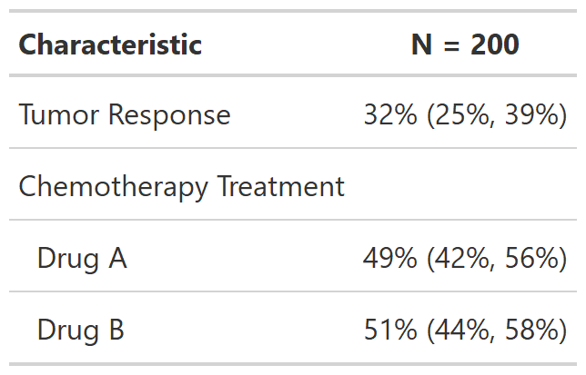

Add a new column with the confidence intervals for proportions.
add_ci(x, ...) # S3 method for tbl_summary add_ci( x, method = NULL, include = everything(), statistic = NULL, conf.level = 0.95, style_fun = NULL, ... )
Arguments
| x | A |
|---|---|
| ... | Not used |
| method | Confidence interval method. Default is
|
| include | variables to include in the summary table. Default is |
| statistic | Formula indicating how the confidence interval will be displayed.
Default is |
| conf.level | Confidence level. Default is |
| style_fun | Function to style upper and lower bound of confidence
interval. Default is
|
Value
gtsummary table
method argument
Methods c("wilson", "wilson.no.correct") are calculated with
prop.test(correct = c(TRUE, FALSE)).
The default method, "wilson", includes the Yates continuity correction.
Methods c("exact", "asymptotic") are calculated with Hmisc::binconf(method=).
Confidence intervals for means are calculated using t.test() and
wilcox.test() for pseudo-medians.
Example Output
Example 1

Example 2

See also
Other tbl_summary tools:
add_n.tbl_summary(),
add_overall(),
add_p.tbl_summary(),
add_q(),
add_stat_label(),
bold_italicize_labels_levels,
inline_text.tbl_summary(),
inline_text.tbl_survfit(),
modify,
separate_p_footnotes(),
tbl_custom_summary(),
tbl_merge(),
tbl_split(),
tbl_stack(),
tbl_strata(),
tbl_summary()
Examples
# Example 1 ---------------------------------- add_ci_ex1 <- trial %>% select(marker, response, trt) %>% tbl_summary(missing = "no", statistic = all_continuous() ~ "{mean} ({sd})") %>% add_ci() # Example 2 ---------------------------------- add_ci_ex2 <- trial %>% select(response, trt) %>% tbl_summary(statistic = all_categorical() ~ "{p}%", missing = "no") %>% add_ci() %>% modify_cols_merge( rows = !is.na(ci_stat_0), pattern = "{stat_0} ({ci_stat_0})" ) %>% modify_footnote(everything() ~ NA)